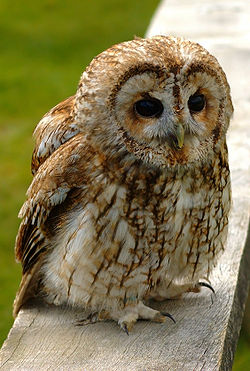
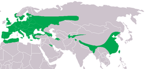
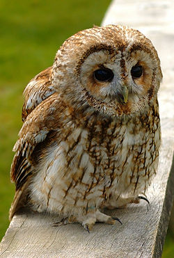
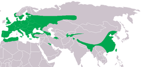

| Tawny Owl | |
|---|---|
|  | |
| Brown individual, probably of subspecies Strix aluco aluco | |
| Conservation status | |
| Binomial name | |
| Strix aluco Linnaeus, 1758 |
|
|  |
| Tawny Owl | |
|---|---|
|  | |
| Brown individual, probably of subspecies Strix aluco aluco | |
| Conservation status | |
| Binomial name | |
| Strix aluco Linnaeus, 1758 |
|
|  |
The Tawny Owl or Brown Owl (Strix aluco) is a stocky, medium-sized owl commonly found in woodlands across much of Eurasia. Its underparts are pale with dark streaks, and the upperparts are either brown or grey. Several of the eleven recognised subspecies have both variants. The nest is typically in a tree hole where it can protect its eggs and young against potential predators. This owl is non-migratory and highly territorial. Many young birds starve if they cannot find a vacant territory once parental care ceases.
This nocturnal bird of prey hunts mainly rodents, usually by dropping from a perch to seize its prey, which it swallows whole; in more urban areas its diet includes a higher proportion of birds. Vision and hearing adaptations and silent flight aid its night hunting. The Tawny is capable of catching smaller owls, but is itself vulnerable to the Eagle Owl or Northern Goshawk. Red Foxes are an important cause of mortality in newly fledged young.
Although many people believe this owl has exceptional night vision, its retina is no more sensitive than a human's. Rather, it is its asymmetrically placed ears that are key to its hunting because they give the Tawny Owl excellent directional hearing. Its nocturnal habits and eerie, easily imitated call, have led to a mythical association of the Tawny with bad luck and death.

{kind=link}
{kind=link}